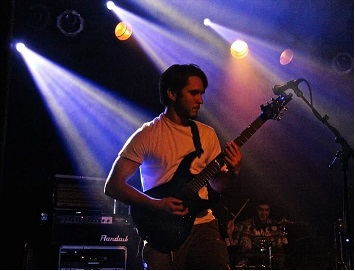

About Me
My name is Tyler Milka and I am an aspiring computer programmer. Although I claim myself as an independent, I come from a family of six whom I love very dearly. My passion has and always will be music and even though I've curbed my rockstar dreams, I hope to find a way to fuse it with my newly developed computer programming skills. The guitar is my instrument of choice, however I like to believe I can sing too! (Now if I only I could stay in key!!) I graduated from Lane Tech High School in 2013 and decided against college to persue a career with Chicago Park District as a floriculturalist at the Lincoln Park Conservatory. After three seasons, I decided it I wasn't being challenged enough, so I decided to enroll in the newly established Coding Bootcamp offered through Northwestern's College of Professional Studies. Although I did not have anything previous experience coding (aside from an HTML class I took in high school), I felt that I would have the oppurtunity to apply this technical skill to almost anything I wanted to persue in the future. I'm beyond excited to continue learning on this journey into the everchanging world of computer programming!